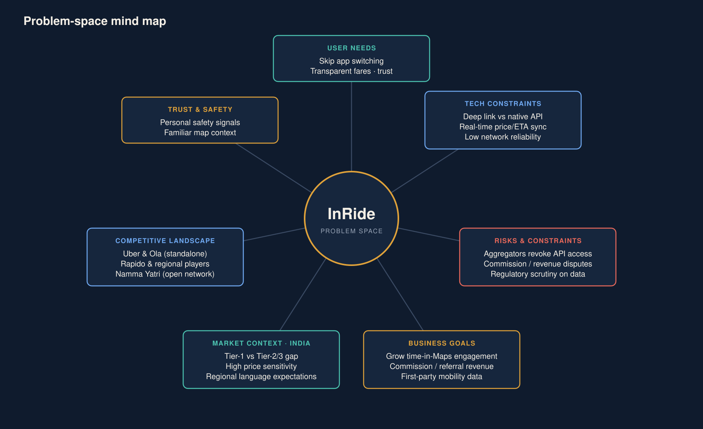
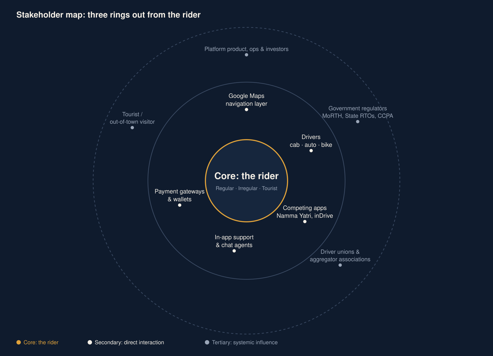
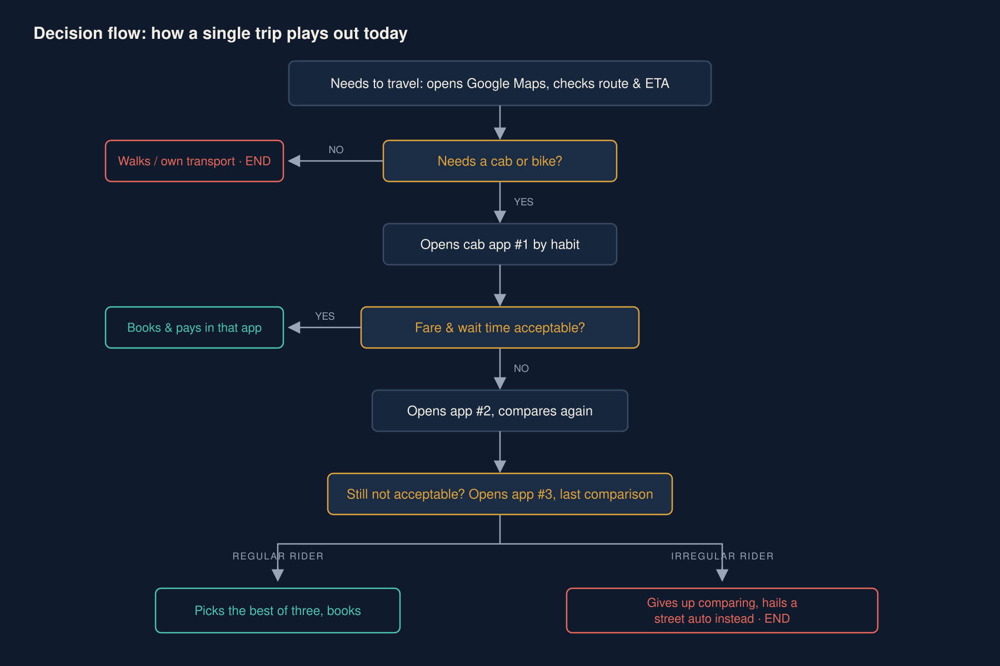
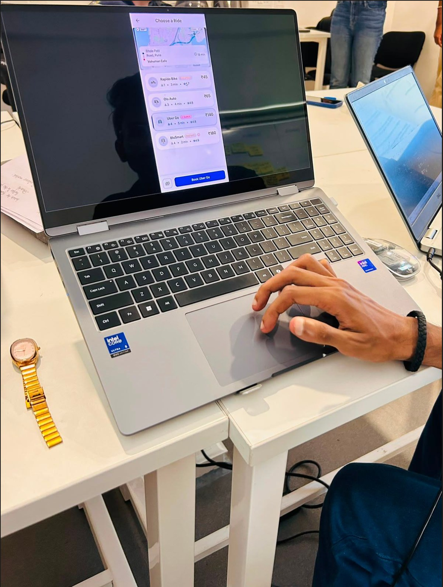
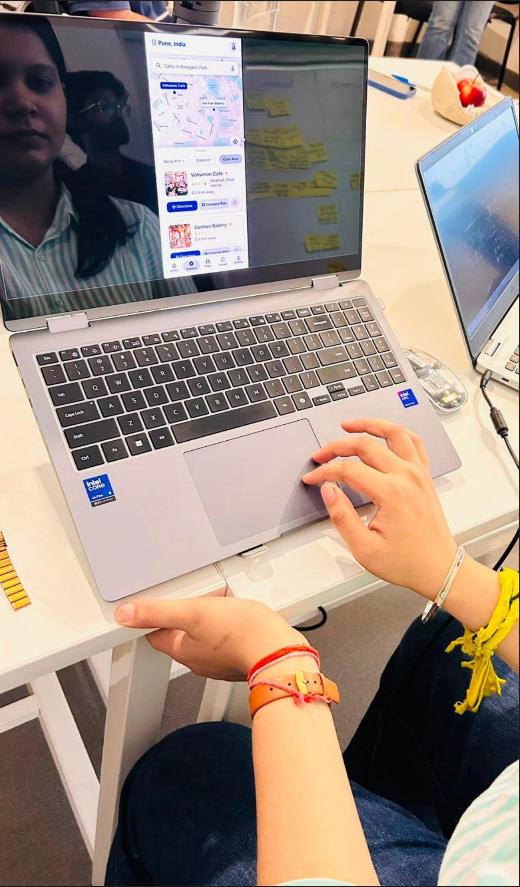

— UX case study · Mobility · India
Every day, millions of riders open Google Maps to find where they’re going, then leave it to work out how they’ll get there. InRide is my concept for comparing and booking rides without leaving Maps. I built it from desk research, a stakeholder map and the complaints riders post about Maps and the cab apps.
Framing the problem
Before any research began, I mapped the problem space and the people inside it: what riders need, what the business wants, what technology allows, and who else has a stake in the ride.


Desk research
With no access to a live user base, the research leaned on structured secondary sources (news coverage, regulatory filings, consumer surveys and platform documentation), and I read each one looking for patterns in what riders complain about.
Uber’s share of the online cab segment. Ola holds 28–34%; Rapido is rising fast at 14–30%.
Motilal Oswal / industry trackers, 2025–26Rapido’s monthly active users by Feb 2026, overtaking Uber India (38M) and Ola (27M).
Sensor Tower / Citi Research via Forbes India, ETreported ride-completion rate at one major aggregator, against a 60% internal target.
Internal employee accounts via industry pressof Ola / Uber riders in Bengaluru hit at least one issue in 12 months.
LocalCircles survey via Deccan Herald, Aug 2024Top complaints: phone use while driving, surge pricing, driver-cancelled bookings.
LocalCircles survey, 2024Regulators mandated cancellation compensation, fare transparency and GPS tracking.
MoRTH / Maharashtra Govt notifications“During peak hours, charges are pretty high, and even if we agree to pay, drivers often decline or cancel after asking for the drop location. If new apps can address these issues, many of us would gladly switch.”A Bengaluru commuter, quoted in Deccan Herald
That willingness to switch, and the fact that no single platform satisfies every rider, is why so many people keep three booking apps installed and compare fares on every trip. Maps adds its own friction too: Indian addresses are often descriptive and landmark-based, which makes precise geocoding structurally harder than in grid-based cities.
| Dimension | Google Maps (native) | Cab apps: Uber & Ola |
|---|---|---|
| Access & trust | ProPre-installed, near-universal, trusted for navigation accuracy at no cost. | ProPurpose-built booking flow with payment, ratings and driver assignment. |
| Ride comparison | ConNative Uber/Ola/Meru booking was rolled back around 2019; comparison isn’t built in anymore. | ConEach app only shows its own fares; comparing means opening both. |
| Booking flow | ConWhere a ride tab exists, bookings still redirect out to the partner app to finish. | ProEnd-to-end booking and in-app payment, no hand-off required. |
| Reliability signals | ConNo visibility into a driver’s cancellation history before a rider commits. | ConNo-shows and last-minute cancellations are among the most cited complaints (22–28% of reviews studied). |
| Support | ProNot applicable: Maps doesn’t own the ride, so it isn’t on the hook for it either. | ConChatbot-first support loops and low first-contact resolution rates repeatedly flagged. |
| Pricing transparency | ConNo fare estimate at all without opening a partner app. | ConSurge is shown, but its timing and logic feel opaque to riders. |
Since InRide would live inside Google Maps, I also looked at where Maps itself lets people down. 2025–2026 tech coverage, support threads and reviews surfaced six recurring complaint themes (my thematic tally of sources reviewed).
Forecasting demand so riders can be told a fare is likely to drop shortly, instead of just reacting to surge.
Filtering by EV or hybrid vehicles, with an estimated CO₂ saving shown per trip.
Assistant-style booking for elderly and visually impaired riders, already piloted by regional players.
Recent cancellation and no-show rates surfaced before a rider commits to a provider.
Metro or bus legs combined with a last-mile cab in a single planned itinerary.
Built for Tier-2/3 markets from the ground up, not retrofitted from a Tier-1 default.
Sources: LocalCircles surveys; MoRTH, CCPA and Maharashtra Govt notices; Forbes India, Economic Times, Business Today; Google Maps Platform documentation; consumer grievance forums; app-store review themes. Figures are from public sources dated 2024–2026 and should be validated with primary research before product decisions.
Primary research
Six commute personas across Pune, built from a qualitative synthesis of what riders say, think, feel and do: daily commuters, safety-first travellers, students, business owners, homemakers and new-to-city movers.
Reading the six empathy maps side by side, the same threads keep resurfacing regardless of age, income or trip purpose.
Every one of the six personas independently compares apps before booking. This isn’t only price-sensitive riders. Everyone does it.
Vaishali and Vanita foreground safety proactively: silent SOS, family-safe routing. Ashish and Mukesh express the same need indirectly, through route choice and “trustworthy driver” thinking. All six touch it; only two lead with it.
Present in five of six maps, independent of persona type. It’s a foundation-level fix, which is why landmark-based addressing became its own opportunity area.
Dhruv and Sneha have neither years of local fare intuition nor a stable connection: exactly the users a bandwidth-heavy comparison layer would fail first.
Nobody complained about navigation. The trouble starts when riders leave Maps to compare and book, so that is the only part InRide changes.
Zooming out
Widening the lens from a single ride to the whole trip, from the moment a destination idea forms to sharing feedback afterwards, surfaces a broader problem than fare comparison alone.
Urban and semi-urban travel in India runs on tools built for efficiency, not for the people using them. Nearly four in ten women in Indian cities report not feeling safe while travelling, a number that climbs after dark. On the other side of the same ride, most drivers put in over 8-hour days, a third exceeding 14 hours.
Navigation, safety, discovery and booking live in separate apps; no app looks after the whole trip.
SOS and location sharing are buried in menus instead of built into the route.
Apps optimise for ride volume, not sustainable hours or fair pay.
Routing shows the fastest path, not what’s worth seeing along the way.
Mapping today
How a rider actually chooses today across Google Maps, Uber, Ola and Rapido for a single trip, front stage and backstage.

One trip, followed from the moment a rider needs to travel to the ride itself. Green notes are regular riders, red notes are irregular riders. The friction sits in stages 4 to 7.
Smartphone, mobile data / Wi-Fi
Regular: Opens Maps out of habit for a known, frequent destination.
Irregular: Unsure of the exact name or address, hesitates before opening the app.
App icon badge, notification prompts (“Where to today?”)
User profile and preference engine pre-loads based on time and location patterns
Device OS location services, mobile network, GPS satellites
Google Maps UI, search bar, pins, reviews
Regular: Uses a saved place or recent search, minimal typing.
Irregular: Types the full query, scrolls reviews and photos to check it’s the right place.
Maps renders search results, ratings, photos, opening hours
Google indexes places, aggregates reviews and ratings, ranks results by relevance
Google Places API, Maps database servers, ad-ranking systems
Route preview, distance and ETA card, Street View
Regular: Quick glance at the ETA, already trusts the route.
Irregular: Checks several route options, zooms in and out to confirm the landmark.
Maps shows route lines, ETA, traffic overlay, alternative routes
Routing engine calculates the fastest or shortest route from live traffic
Traffic data feeds (government, telecom sensors), map tile servers, cloud hosting
Ride app icons on the home screen (Ola, Uber, Rapido)
Regular: Long-presses the address to copy it, opens their usual app (brand loyalty).
Irregular: Copies the address by hand, unsure which app to open, may open 2–3 apps.
Ride app splash screen loads; shows the last-used address (regular) or a blank field (irregular)
Ride app pre-fetches nearby driver supply in the background
App store services, push notification servers (FCM / APNs)
Fare estimate screen, vehicle category icons
Regular: Pastes or picks a saved address, chooses their usual vehicle, ignores promo banners.
Irregular: Re-enters pickup and drop, compares fares across apps, reads promo and surge info carefully.
Real-time fare per category (Mini, Sedan, Auto, Bike), surge indicator, promo codes
Dynamic pricing engine sets surge from demand and supply; fraud and risk check on the account
Cloud servers hosting the pricing microservice, geolocation database
Booking confirmation screen, OTP
Regular: One-tap confirm with the saved payment method.
Irregular: Picks a payment method each time, double-checks the fare and cancellation policy.
Driver name, photo, vehicle number, OTP, ETA to pickup
Dispatch algorithm matches the nearest well-rated driver and sends the request to the driver app
Driver onboarding and verification systems, background dispatch servers
Live map with car icon, driver photo, vehicle number
Regular: Checks the ETA now and then, carries on with other tasks.
Irregular: Watches the driver icon closely, may call the driver to confirm the pickup point.
Live GPS tracking, call and chat buttons, “driver arriving” alerts
System updates the driver’s GPS every few seconds and recalculates the ETA
Real-time telemetry servers, SMS / OTP gateway providers
Car, driver ID badge, honk or call notification
Checks the number plate and driver photo before boarding; may share trip status with a contact.
Driver greets the rider, confirms name and destination, starts the trip in the app
System logs trip start, timestamps and geofence check-in
Driver’s own GPS / map app, vehicle telematics (if fitted)
In-app trip screen, seatbelt, AC vents
Regular: May multitask or take a call.
Irregular: Follows the route in the app and corrects the driver if needed.
Driver navigates with the ride app or Google Maps; app shows trip progress and safety check-ins
Safety monitoring flags route deviations and sends alerts
Third-party map and routing services, insurance and monitoring partners
Stage 9 was partly cut off in my original frame; its notes are reconstructed from what remained.
From friction to “how might we”
Each flagged moment in the blueprint became an insight, then a design opportunity. Rider sentiment slides from confident, to anxious in the wait, and back to neutral; the friction zone sits squarely in Search → Compare → Book.
Friction zone: Search → Compare → Book → Wait
The regular rider
Daily commuters in Indian cities need a faster way to compare fares across Uber, Ola and Rapido from within their normal route-planning flow, because switching between three apps costs them time on every ride, even when they already know the outcome.
The irregular rider
Occasional riders need a low-effort, trustworthy way to book a fair-priced ride without learning three unfamiliar apps under time pressure, because today’s process is confusing enough that many give up and take a less safe, unmetered alternative.
OPP · 01
A single place to see live fares and ETAs across Uber, Ola and Rapido, without opening any of them.
OPP · 02
Making the split between what a rider pays and what a driver keeps visible, by default.
OPP · 03
A safety mechanism riders, especially women riding alone, can trust is actually live.
OPP · 04
Landmark-based pickup notes that travel with the pin, instead of being re-explained every ride.
OPP · 05
A way to guarantee short or off-route fares don’t get silently refused across every app.
Concepting
Each opportunity area became a concrete service concept, pulling in the industry-trend signals from secondary research and the AI touchpoints surfaced in the journey map.
Designing the fix
Booking a ride, redesigned as one unified layer inside Google Maps: one app instead of four for the same trip.
Target outcomes for the redesign.
The same trip inside Maps. Stage 4, the automatic comparison, replaces opening three apps.
Smartphone, one app icon
Regular: Opens the one app directly, out of habit.
Irregular: Opens the same app, no need to decide which one, so less hesitation.
Personalised “Where to?” prompt using time and location
Personalisation engine pulls saved places and time-of-day travel patterns
Device location services, cloud user-profile database
Search bar, map and place autocomplete on one screen
Regular: Taps a saved place chip, no typing.
Irregular: Types the destination once, sees photos and ratings inline without leaving the app.
Unified search renders results with the embedded maps SDK, no redirect
Places and geocoding service ranks results by relevance and past use
Maps / geocoding API (e.g. Google Places), search indexing servers
Route card: distance, ETA, live traffic, saved-place tag
Reviews one route and ETA card, taps “Find rides”. Same action for both personas.
Route, traffic and ETA overlaid from the routing engine; ride availability pre-fetched
Routing engine uses live traffic; availability pre-check runs silently for all three providers
Traffic feeds, routing microservice, provider availability endpoints
Split-screen fare card: Ola, Uber, Rapido together with price, ETA, rating
Regular: Glances at the comparison, usually picks the provider chosen before.
Irregular: Reads all three fares and ratings side by side, no app switching.
Platform queries Ola, Uber and Rapido at once and shows normalised cards (price, ETA, car type, rating)
Aggregation layer calls pricing and availability APIs in parallel, normalises units and ETA, applies fair ranking
Partner integration layer (API gateways / SDKs), rate-limit and caching, format normalisation
“Best value”, “Fastest” and “Cheapest” badges on each option
Taps the chosen ride card. No separate app to open; one motion for both personas.
Platform tags options (cheapest, fastest, top-rated) with the scoring rule shown to the user
Scoring engine weighs price, ETA, past reliability and user preference
Rules engine / ML ranking model hosting, A/B testing infrastructure
One confirmation sheet with the saved payment method filled in
Regular: One tap on “Confirm” with the default payment.
Irregular: Confirms payment from the unified wallet set up once at onboarding; still one tap.
Platform sends one booking request to the chosen provider and shows instant confirmation
Orchestration service places the booking in the provider’s dispatch system and handles its auth tokens
Provider dispatch systems, auth / token management servers
One live-tracking map, the same look for every provider
Watches one tracking screen; no need to remember which app to reopen.
Each provider’s live GPS feed shown in one consistent tracking UI
Middleware polls each provider’s tracking API and maps it to one data schema
Per-provider telemetry servers, WebSocket streaming for live location
Driver card, OTP, vehicle number, same UI for every provider
Confirms driver and vehicle in the same familiar UI, whichever provider was matched.
Platform confirms trip start (geofence / OTP) and syncs it to the unified history
Trip start logged in both the platform’s and the provider’s records; reconciliation starts
Provider trip-management systems, geofencing services
Same map UI with a safety button
Rides along; SOS and help sit behind one consistent button, whatever the provider.
Platform shows trip details and check-ins; support runs through one interface for every provider
Safety service watches for route deviation across providers with one standard for tickets
Provider safety systems, insurance, map and routing services
Stage 9 was partly cut off in my original frame; its notes are reconstructed from what remained.
Interface
Search a place, compare rides, book, track the driver and navigate. The screens keep Google Maps’ familiar patterns, and safety controls (share trip, SOS and a verified-driver badge) stay one tap away.
Testing & iteration
Participants worked through the prototype on a laptop. Their feedback was captured as notes on the screens, then built into the next version. Switch between the two to compare.


What I kept coming back to was the handoff, when a rider already knows where they’re going and still has to leave Maps to get a ride.